2023年12月13日 20:41:34
1）
交接
磨盘
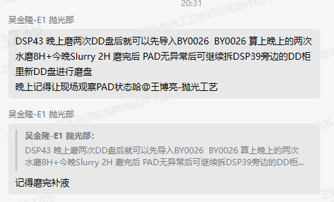
水磨2h
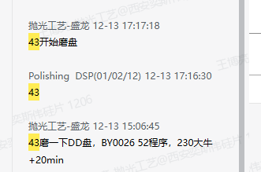
水磨盘Recipe 52号
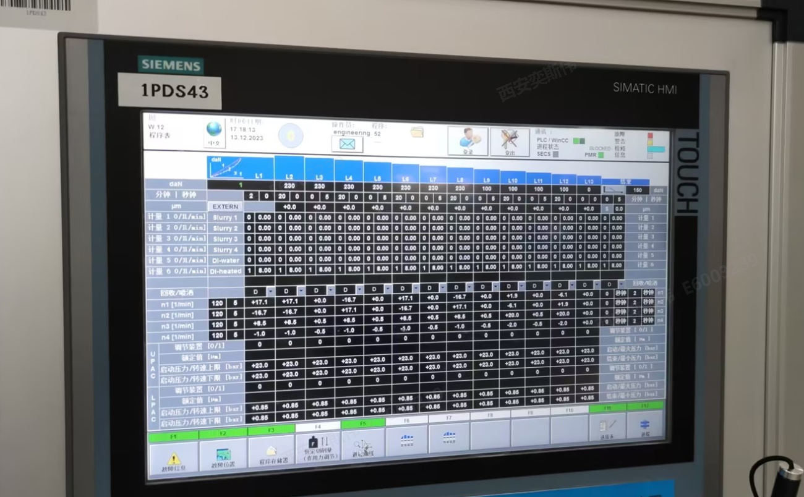
43用这个recipe磨DD盘，磨两次，每次磨完补一下液。磨BY0026
Slurry磨盘1h Slurry磨盘Recipe 50号
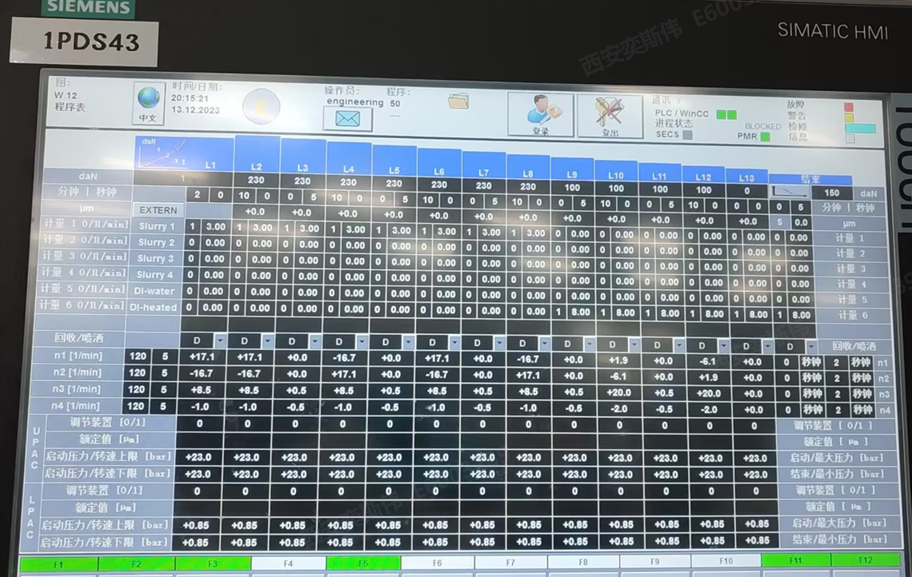
确认状态为设备只水磨1h
计划Slurry磨盘 2h 每次打磨时确认Pad状态 安排补液
BY0026磨盘履历
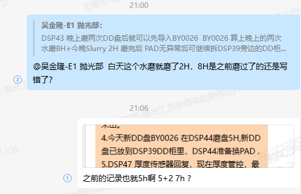
2）Lot信息异常
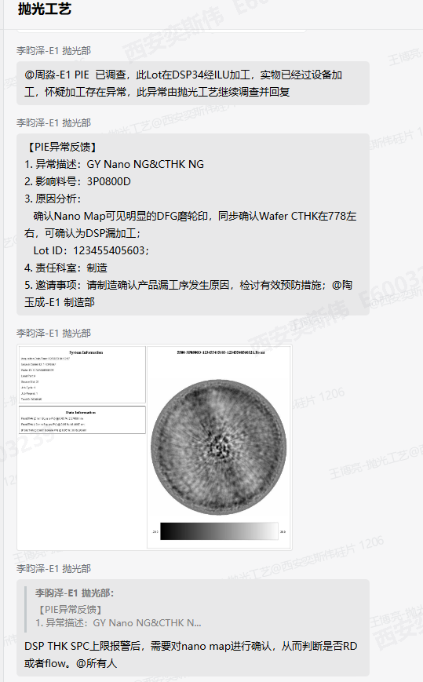
MES Log
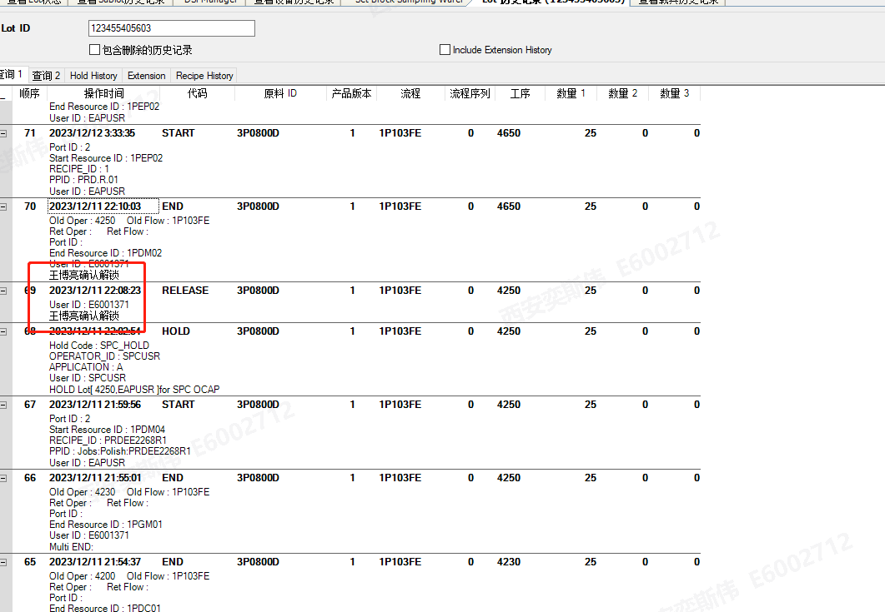
WS2+那边也没记录
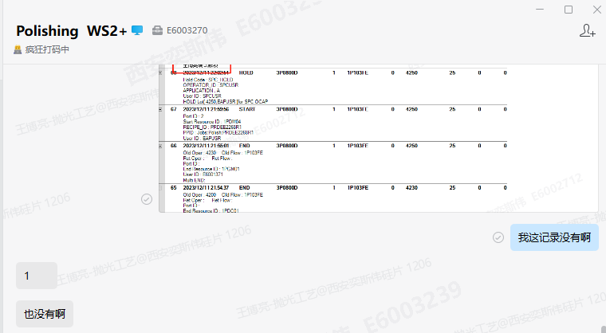
3） 忙完了，摸鱼时间到~ 2023年12月13日 21:44:37
交接
25的GapSensor异常确认异常状态
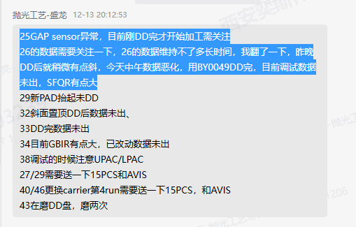
确认设备状态是有变化，可以调好
恢复后首Run UPAC相对较低，第二Run UPAC数据已恢复 但数据仍然恶化
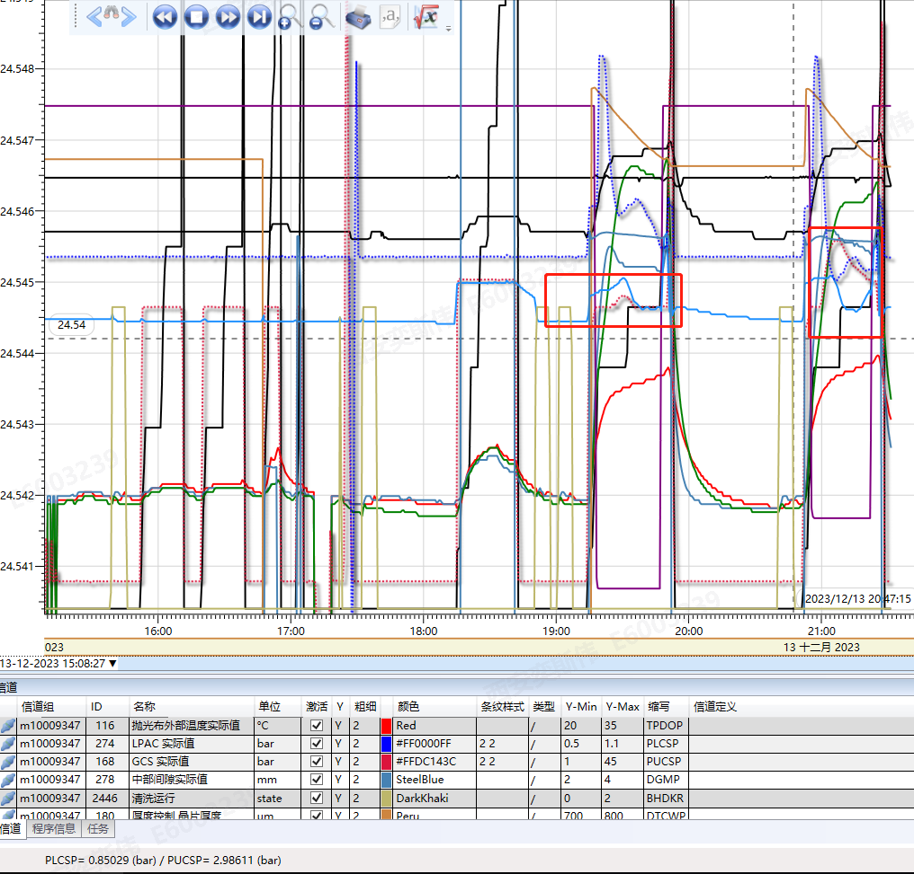
首Run数据纯凹 数据恶化到575 SFQR33 ERMX 116
判定为UPAC不正常，已加UPAC，跟踪调整数据
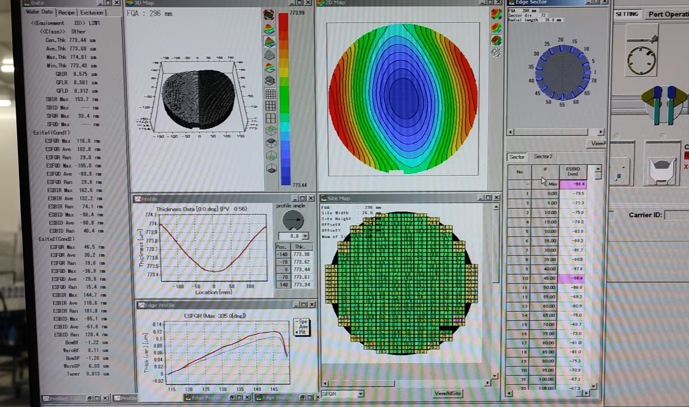
增加UPAC 5Bar 先把设备状态调试正常后监控数据
2023年12月13日 21:57:06
4）交接
没Carrier了
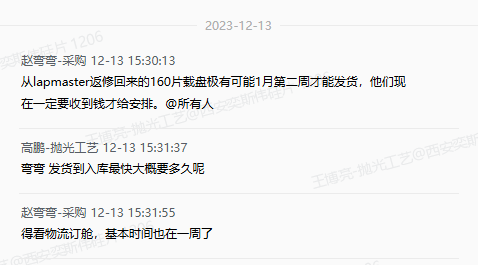
5）专利确认
一个简单的专利居然可以写的这么多，真的是6~